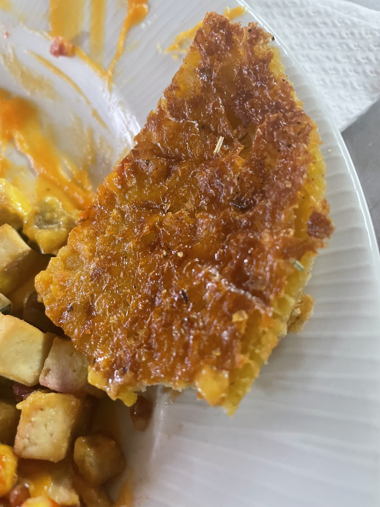

Frittata de garbanzo
Ingredientes
2×
- 150 g de harina de garbanzo
- 300 ml de agua
- 2 cdas de aceite de oliva
- 1 cdta de cúrcuma
- sal
- romero
- patatas salteadas

Preparación
Paso 1
Mezclar 150 g de harina de garbanzo con 300 ml de agua, 2 cdas de aceite de oliva, 1 cdta de cúrcuma, sal y romero. Dejar reposar 10min.
Paso 2
Verter en un molde o sartén apta para horno engrasada y hornear 25min a 200ºC, hasta que la superficie esté dorada.
Paso 3
Servir en porciones, por ejemplo con patatas salteadas.
Resumen
150 g de harina de garbanzo
300 ml de agua
2 cdas de aceite de oliva
1 cdta de cúrcuma
sal
romero
Mezclar Dejar reposar
patatas salteadas
Verter hornear 200ºC